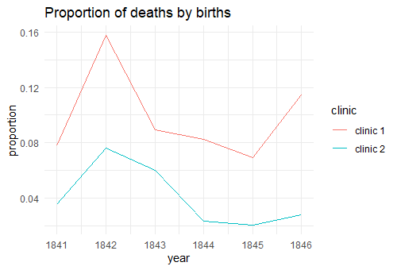

The Beginnings of
Washing Hands
With the COVID-19 pandemic the world remembered an important action that should be done, even if a disease is not plaguing the globe, wash hands. Washing hands can prevent you from virus, like the coronavirus, and bacterias, in this article I will discute the last one.
In 1840’s too many women who recently gave birth was dying by a disease called childbed fever. Dr. Ignaz Semmelweis, a Hungarian physician born in 1818 and active at the Vienna General Hospital, was a person interested on why there was occurring these deaths.
He started his research taking data from two different clinics in the Vienna General Hospital. This data contained the number of births and number of deaths of women after give birth in the year of 1841 to 1846. On the figure below we can see the proportion of deaths by births in the two diferent clinics.
Dr. Ignaz Semmelweis notices, as us also, that may exist difference between the two clinics in relation to how they treat pregnant women. Clinic 1 had clearly a larger proportion of deaths. In the research for what was causing it in clinic 1, the physician just found that the majority of births made on clinic 2 was made by midwife students, while mostly by medical students in clinic 1 and the medical students worked in autopsy rooms examining corpses. With that in mind, Dr.Ignaz thinked that something on dead corpses was infecting women during the births. He suggested the medical students to start washing their hands with soap before delivered the baby, even reluctantly they did it.

In the above plot we can see the dramaticly change in the proportion of deaths after the start of hand hygiene. But for formality we need a statistical test to see if the difference is signicant, in this case the t-test comes directly to the mind of a statistician. The test gives a pvalue < 0.05, so we can assume that washing hands decreases the number of women who died after giving birth by childbed fever.And by this way, Dr. Ignaz Semmelweis discovered the effects of bacterias in our bodies.